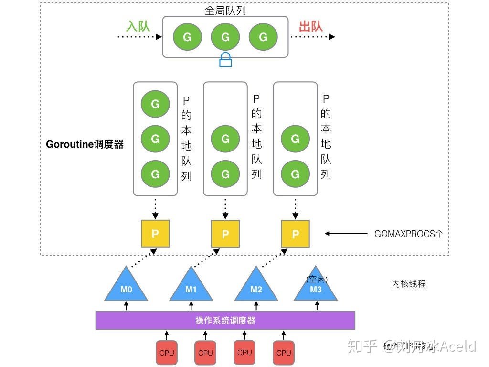
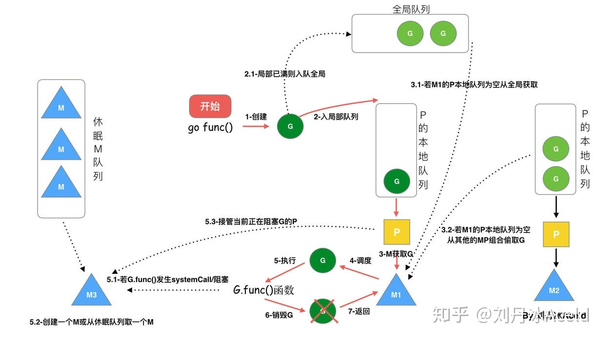
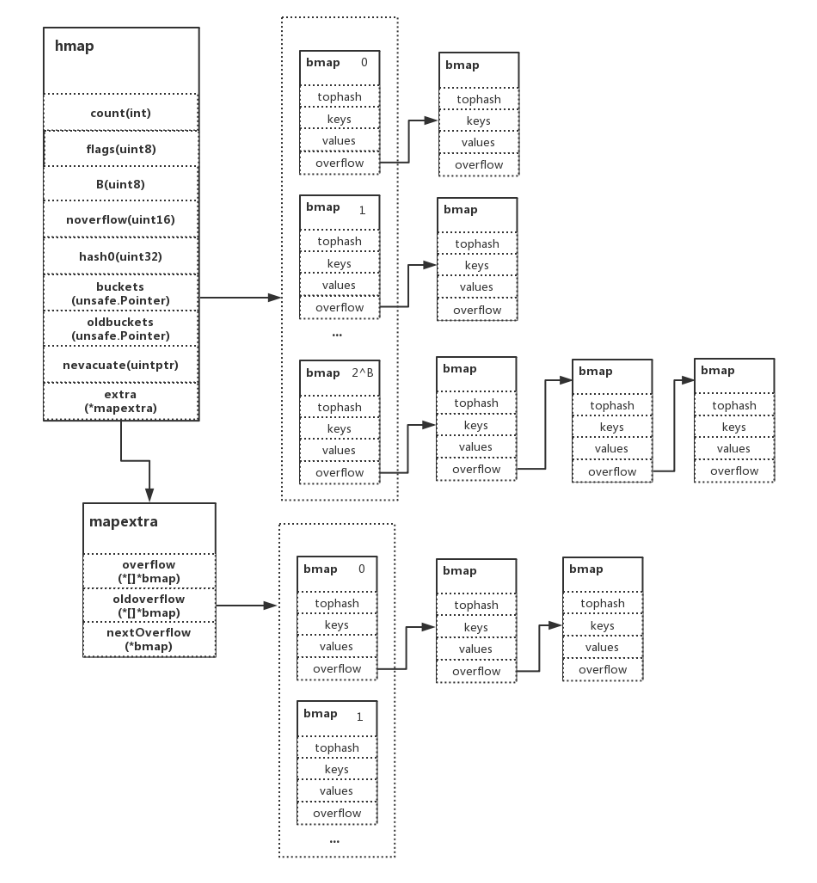
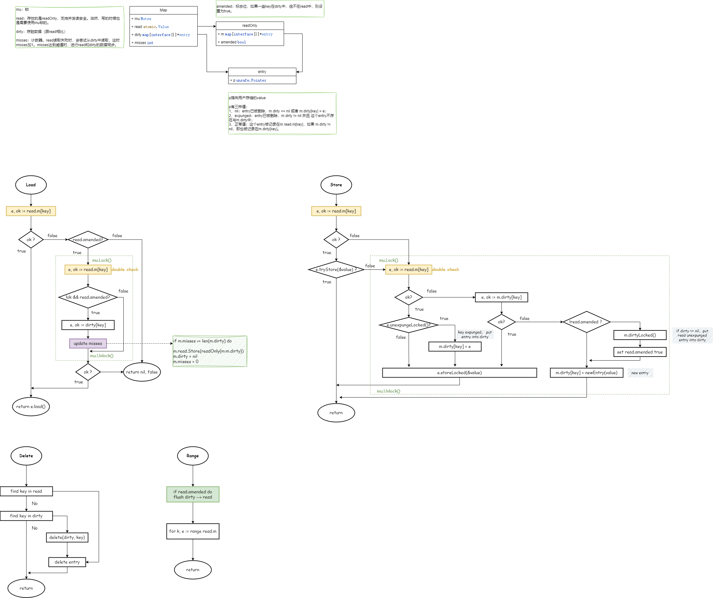
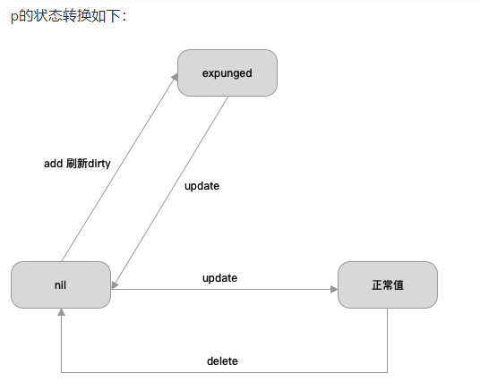
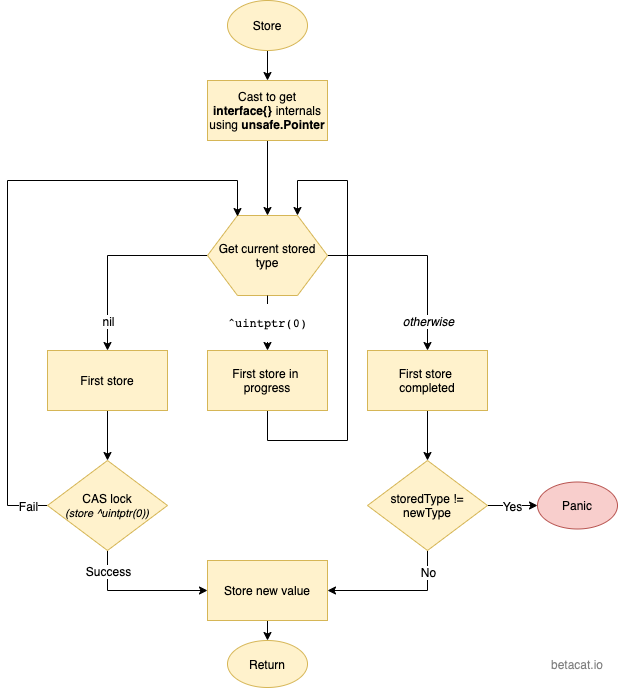
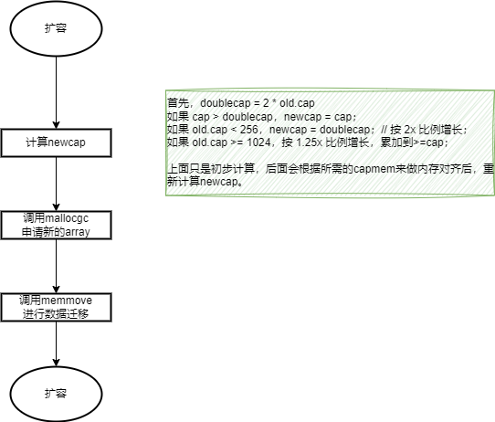

Golang
1. struct 能比较吗？
在Golang中，struct类型是可比较类型，只要结构体中的所有字段都是可比较的类型。
可比较类型包括布尔型、数字型、字符型、指针、数组和结构体类型，只要它们的底层类型都是可比较的。
切片 slice、映射 map 和 函数 func 类型不是可比较类型，
2. waitgroup 使用注意事项
- 任务开始前，将计数器加1
wg.Add(1)； - 任务完成后，将计数器减1
wg.Done()； - 如果任务出错，也需要调用
wg.Done()确保计数器减少，否则wg.Wait()将一直等待； wg.Add()一定要在wg.Wait()前执行；
3. GPM调度器（GMP）
GPM代表了三个角色，分别是 Goroutine 、Processor、 Machine。
- G：goroutine协程
- P：processor处理器，负责M与G的连接。
- M：操作系统thread线程
3.1. 模型

- P有本地队列：G优先加入到P的本地队列；如果满了，则会把本地队列的一半G移动到全局队列。
- P最多有GOMAXPROCS个：所有P都在程序启动时创建好。
- M运行G：M先获取P，从P的本地队列获取G；如果队列为空，M尝试从全局队列拿一批G放到P的本地队列，或者从其他P的本地队列偷一半放到自己P的本地队列。
【M何时创建？】：找不到空闲的M时。一个M阻塞，P就会创建或切换另一个M。
数量限制：
- G：没限制，受内存影响；
- M：默认10000，可通过
debug.SetMaxThreads调整； - P：最多有GOMAXPROCS个；
3.2. 调度器设计策略
- 复用线程：避免频繁创建、销毁线程
- work stealing机制：M没有可运行的G时，从其他P的队列偷取G，而不是销毁线程。
- hand off机制：M因为G进行系统调用阻塞时，就释放绑定的P，把P转移给其他空闲的M执行。
- 并行：最多有GOMAXPROCS个线程分布在多个CPU上同时运行。
- 抢占：在coroutine中要等待一个协程主动让出CPU才执行下一个协程，在Go中，一个goroutine最多占用CPU 10ms，防止其他goroutine被饿死。
- 全局队列：当M从其他P偷不到G时，它可以从全局G队列获取G。
3.2. go func() 调度流程

4. GC
5. map并发
当使用两个以上的goroutine对map进行读写，会得到panic信息：concurrent map read and map write。
那go是如何检测到并发读写的呢？从源码中可以看到，写的时候设置了hashWriting的标志位，读的时候会检查该标志位。（写的时候也检查）
// read
func mapaccess2(t *maptype, h *hmap, key unsafe.Pointer) (unsafe.Pointer, bool) {
...
if h.flags&hashWriting != 0 {
throw("concurrent map read and map write")
}
...
}
// write
func mapassign(t *maptype, h *hmap, key unsafe.Pointer) unsafe.Pointer {
...
if h.flags&hashWriting != 0 {
throw("concurrent map writes")
}
hash := t.hasher(key, uintptr(h.hash0))
// Set hashWriting after calling t.hasher, since t.hasher may panic,
// in which case we have not actually done a write.
h.flags ^= hashWriting
...
}
5.1. map实现

- hmap维护buckets，当buckets满了，会发生扩容。（extra）
- bmap就是一个bucket，最多存储8个键值对。当发生hash冲突时，会溢出到下一个bmap。（overflow）
- keys和values存储按照
K/K/K/K/V/V/V/V的形式，方便字节对齐，节省内存。
5.2. sync.Map
两个问题：
- 如何实现？
- 如何解决并发提升性能？
如果采用传统的大锁方案，其锁的竞争十分激烈。sync.Map利用空间换时间、读写分离，采用冗余的数据结构，来减少时间的消耗。
sync.Map中的冗余数据结构是：read 和 dirty，二者都存放 key-entry，entry指向用户数据value。只要修改了entry，对read和dirty都是可见的。
dirty为nil时，read代表所有数据；dirty不为nil时，dirty代表所有数据。


总结：
- 通过读写分离，冗余数据结构，空间换时间的思想，来减少耗时。
- read优先：操作read比较快，（原子操作）。
- 双检查机制：read不符合要求时，操作dirty前需要上锁，期间可能发生了变化，read突然又符合要求了。
- 延迟删除：delete时，优先操作read，只是把value赋值为nil。后面提升dirty为read时，才会统一删除。
6. atomic.Value

type Value struct {
v interface{}
}
type ifaceWords struct {
typ unsafe.Pointer
data unsafe.Pointer
}
func (v *Value) Store(val interface{}) {
vp := (*ifaceWords)(unsafe.Pointer(v))
vlp := (*ifaceWords)(unsafe.Pointer(&val))
for {
typ := LoadPointer(&vp.typ)
if typ == nil {
// 首次存储，如果为nil，说明没人正在写，设置typ
if !CompareAndSwapPointer(&vp.typ, nil, unsafe.Pointer(^uintptr(0))) {
continue
}
StorePointer(&vp.data, vlp.data)
StorePointer(&vp.typ, vlp.typ)
return
}
// 说明有人正在首次存储
if uintptr(typ) == ^uintptr(0) {
continue
}
if typ != vlp.typ {
panic("sync/atomic: store of inconsistently typed value into Value")
}
// 写数据
StorePointer(&vp.data, vlp.data)
return
}
}
7. slice
- array长度是固定的；slice可以自动扩容
type slice struct {
array unsafe.Pointer // 指向array的指针
len int // 当前元素个数
cap int // 容量
}

【注意事项】：
//切片操作
a := []int{1,2,3,4,5,6,7,8}
b := a[0:5] //这个时候 b 和 a 共用的同一个array
b = append(b, i) // b 未发生扩容，还是共用array
b[0] = 99 // a,b都可见
b = append(b, []int{0,0,0,0}...) // b 发生了扩容
b[0] = 999 // 只有b被修改了
【slice可以申请最大容量是多少？】：
- 首先，超过int大小的直接panic；
- 其次，计算所需内存（
size * cap）时，如果 mem > maxAlloc，直接panic； - 内存够，就能申请。否则 out of memory。
func makeslice64(et *_type, len64, cap64 int64) unsafe.Pointer {
len := int(len64)
if int64(len) != len64 {
panicmakeslicelen()
}
cap := int(cap64)
if int64(cap) != cap64 {
panicmakeslicecap()
}
return makeslice(et, len, cap)
}
8. 性能分析工具
8.1. pprof
- runtime/pprof：采集程序运行数据；
- net/http/pprof：采集 http server 运行数据；
可以做什么：
- CPU Profiling：CPU分析
- Memory Profiling：内存分析
- Block Profiling：阻塞分析
- Mutex Profiling：互斥锁分析
8.2. trace
捕获各种执行中的事件：
- goroutine的创建、阻塞
- syscall的进入、退出、阻塞
- GC事件
- heap的大小变化
8.3. GODEBUG
适合用来调试GPM、GC
9. 服务不重启热部署
- gin
- endless
10. defer实现原理
return 不是原子级操作的，执行过程是: 保存返回值 —> 执行 defer —> 执行ret
- deferproc()：创建defer。在声明 defer 处调用，其将 defer 函数存入 goroutine 的链表中；（单链表，表头存，表头取，保证FIFO）
- deferreturn()：执行defer。在 ret 指令前调用，其将 defer 从 goroutine链表中取出并执行。
11. channel
参考：
https://zhuanlan.zhihu.com/p/323271088